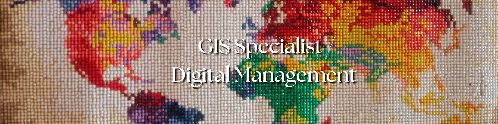

Geográfa y Creativa Digital
¡Hola! Soy Raquel, geógrafa de formación y especialista en sistemas de información geográfica (SIG), con experiencia en análisis territorial y gestión digital. Me apasiona conectar ideas, datos y estrategias que tengan impacto, combinando precisión técnica con una visión creativa. En este espacio encontrarás algunos de mis proyectos y ejercicios, resultado de lo que estoy aprendiendo y creando.